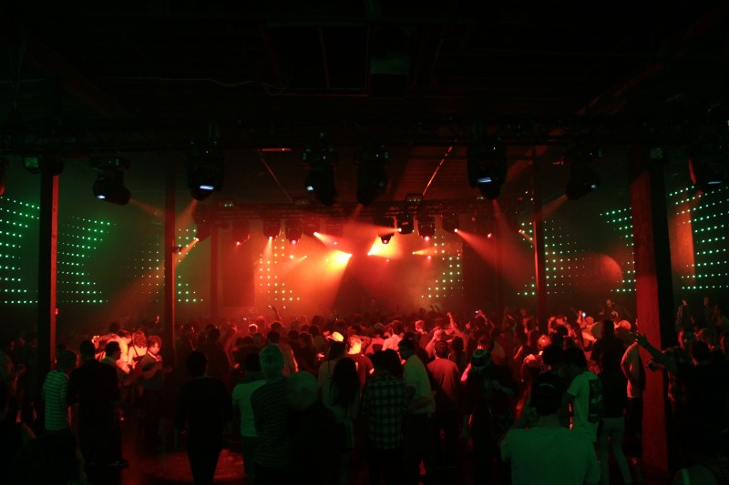
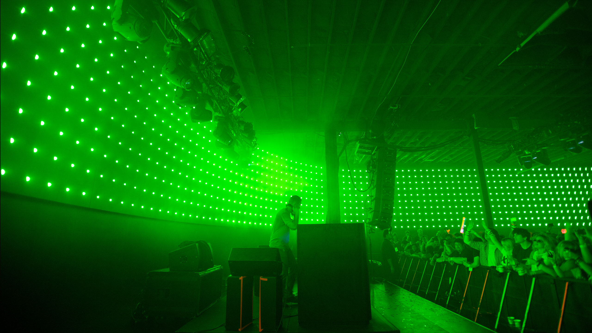

In 2012, during SXSW, the legendary Spaghetti Warehouse in downtown Austin, Texas underwent a transformation into a colossal Nike FuelBand. The experience linked the energy, activity, and enthusiasm of the space with the FuelBand gradient, which spanned the inside of the entire building. My responsibilities included writing the software in openFrameworks and performing as the live VJ during concert performances.


